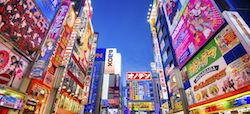
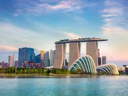
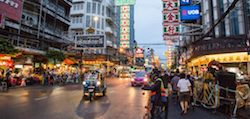

Vakantiebestemmingen in Azie
Hier vindt u onze top vakantiebestemmingen in Azie. We zijn speciaal voor u op onderzoek gegaan om de beste plaatsen en vakantieverblijven te zoeken in het wereldgebied, Azie. Azie is het grootste werelddeel van de aarde, omringd met zeeën, rivieren en kanalen. Er bevindt daar heel veel verschillende culturen.
Ga op onderzoek uit in het grootste werelddeel van de aarde of laat je juist verwennen bij een van de luxe vakantieverblijven met zon, eten en cultuur. Er valt dus veel te doen en veel te kiezen. Hierbij helpen wij u met het kiezen van de beste vakantiebestemming in Azië.
Shanghai
Bent u nieuwsgierig en wilt u op onderzoek uit tussen een nieuw cultuur? Boek nu een reis naar Shanghai, China. Shanghai is een grote wereldstad waar veel te beleven is. Je bevindt je tussen authentieke restaurants met heerlijke maaltijden, gezellige winkelmarkten die tot in de nacht bereikbaar zijn en geweldige bezienswaardigheden die je nooit eerder hebt gezien.
Tokyo
Bezoek de spectaculaire hoofdstad van Japan. Tokyo is een moderne wereldstad met veel verrassende bezienswaardigheden. Maak bijvoorbeeld een stadstour door Tokyo, bezoek het Keizerlijke Paleis of kijk uw ogen uit vanuit het panoramadek van de Tokyo Tower. En proef natuurlijk de authentieke smaken uit de Japanse keuken in een van zijn restaurants.
Singapore
Singapore is geweldig! Boek nu snel een (rond)reis naar Singapore. Deze wereldstad staat bekend om de vele wolkenkrabbers, schone straten en een van de grootste havens ter wereld. Er is genoeg in Singapore te bezichtigen; van winkelcentra en restaurants, beroemd om hun authentieke smaken tot prachtige, witte stranden die je tot rust maken.
Bangkok
Maak nu een reis naar de overweldigende hoofdstad van Thailand. Een bestemming van uitersten. Laat je ogen openen door de schitterende bezienswaardigheden, het drukke verkeer in samenhang met de serene tempels en natuurlijk de authentieke smaken van het plaatselijke eten. Bezoek het Koninklijk Paleis en de prachtige tempel Wat Phra Kaew. Neem ook een kijkje op de gezellige avondmarkten en de populaire weekendmarkten waa van alles aangeboden wordt.